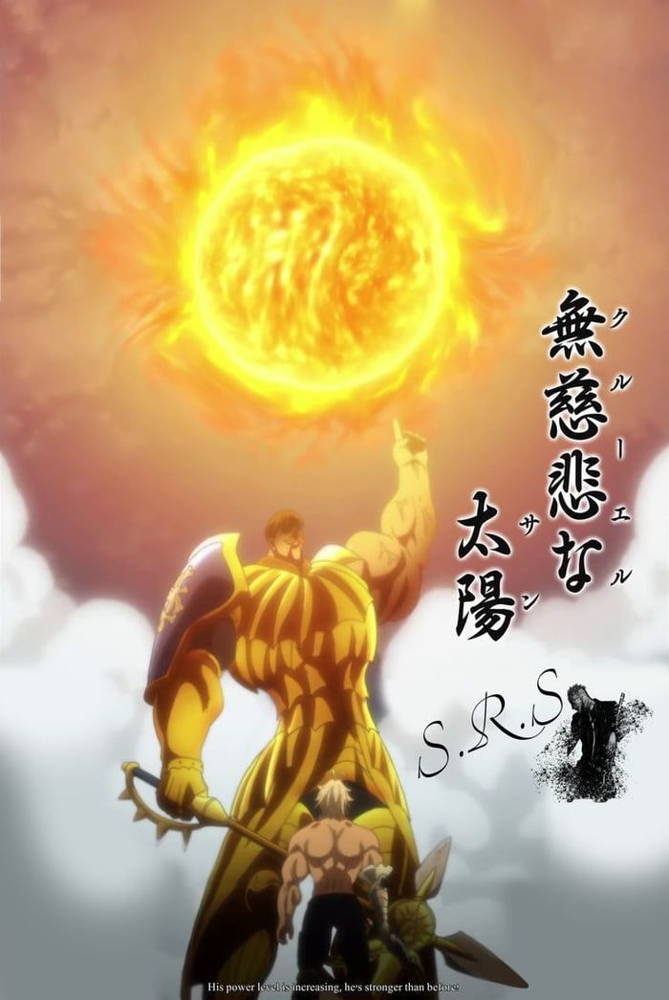
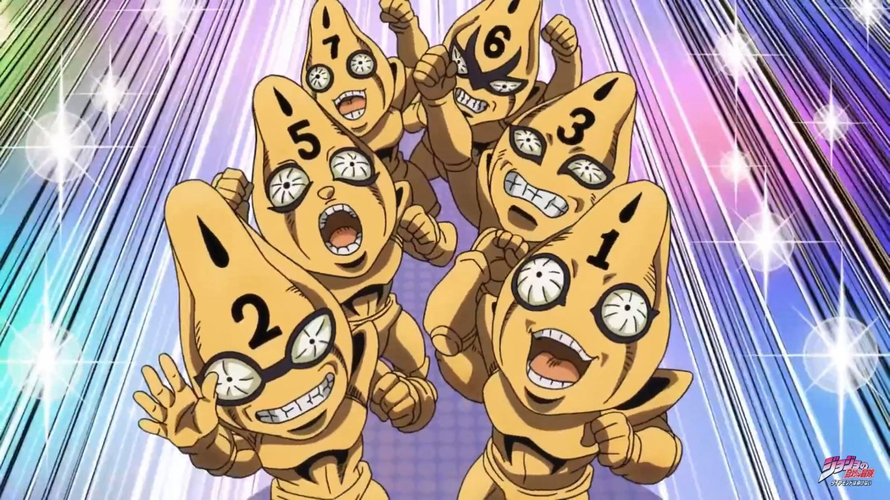
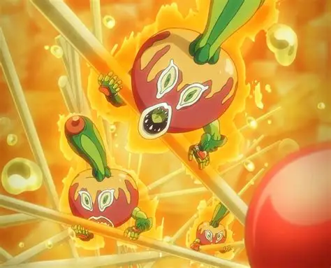
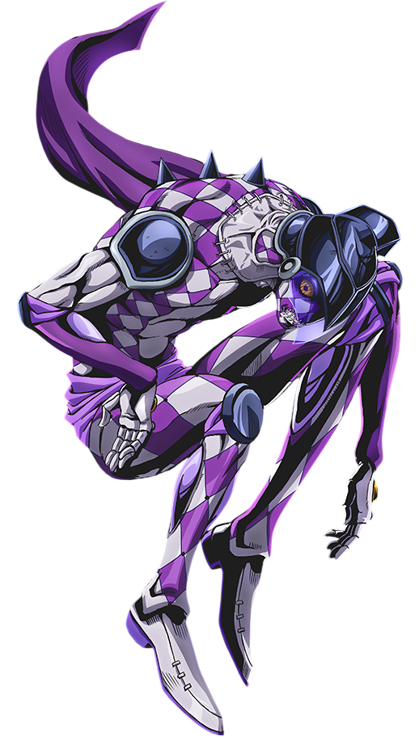
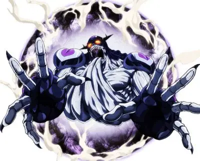
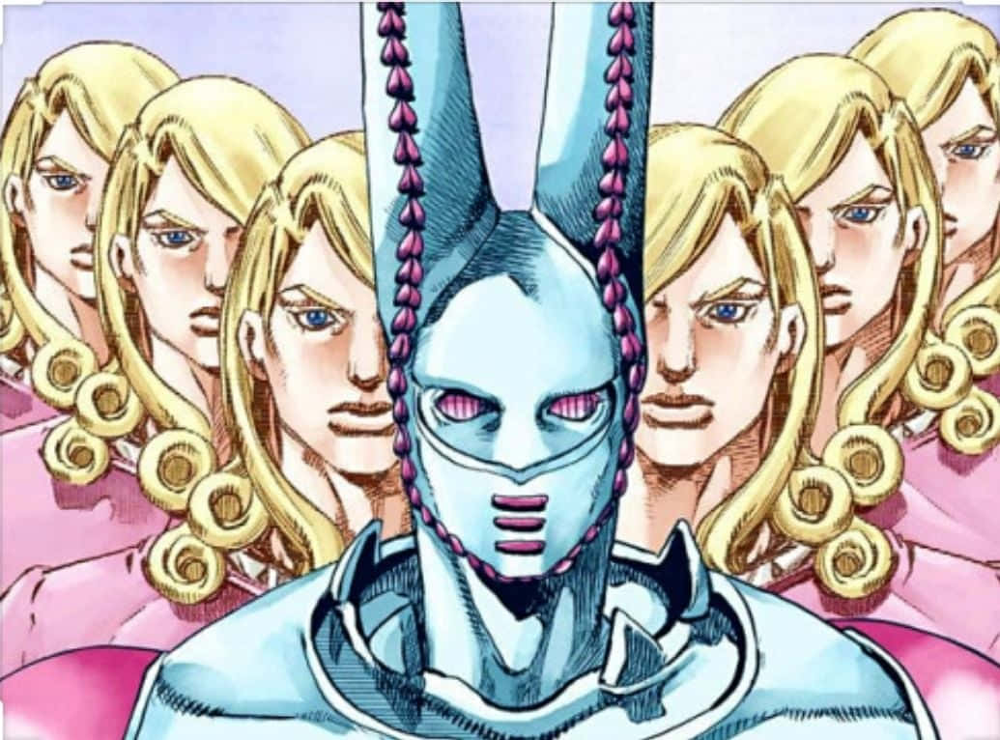
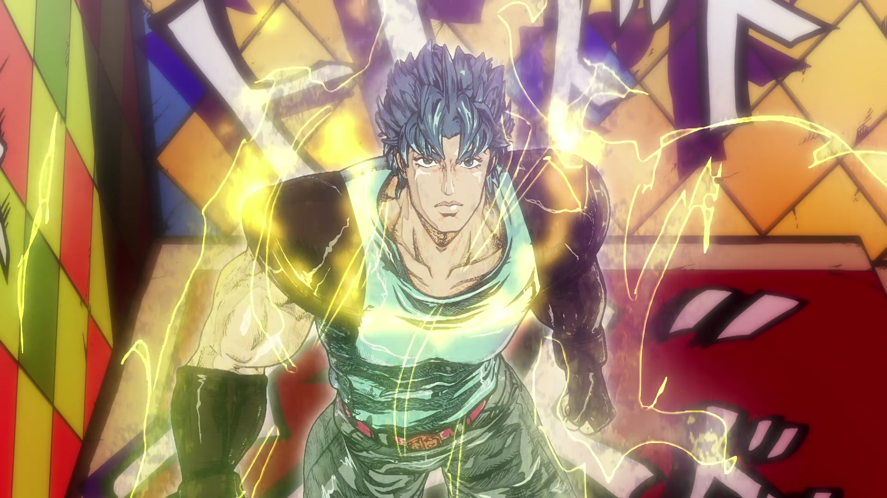
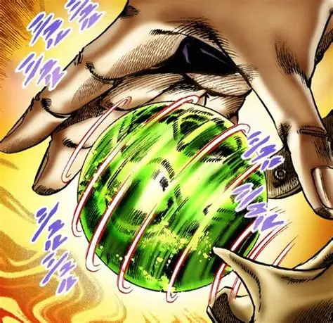
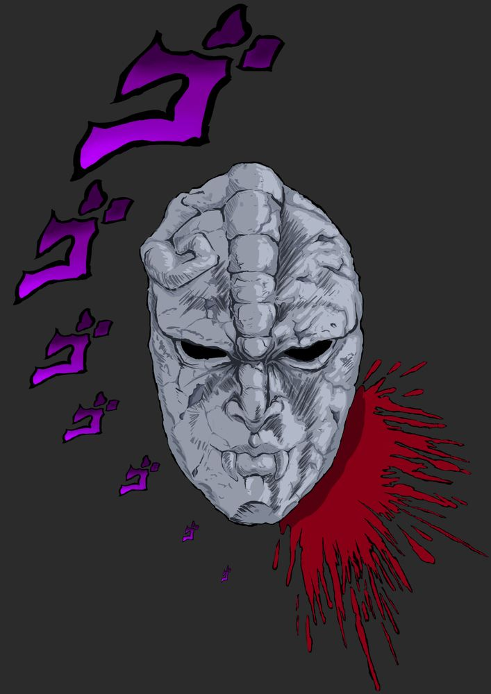

01

简体中文替身与能力指南：了解技能、暴击、站位、冷却、玩家对战和开发状态。

9个核心替身、3个官方附加模组，以及开发中的替身。TUSK 已回到开发状态，不再列入当前可游玩 Addon。



开发中：技能与平衡会在发布前调整；当前不可游玩。

开发中：技能与平衡会在发布前调整；当前不可游玩。

开发中：技能与平衡会在发布前调整；当前不可游玩。

开发中：技能与平衡会在发布前调整；当前不可游玩。

开发中：技能与平衡会在发布前调整；当前不可游玩。

开发中：技能与平衡会在发布前调整；当前不可游玩。

通过特殊呼吸产生近似阳光的波纹能量，对抗超自然敌人。模组玩法仍在开发中。

以旋转技巧控制钢球等物体，借旋转的力量战斗。模组玩法仍在开发中。

石鬼面赋予吸血鬼超人力量及再生能力。模组玩法仍在开发中。
攻击遵循实际射程；前方目标或墙体不能随意穿过。
测试补丁尝试修正背对攻击者的目标所受击退方向，但仍需游戏内验证。
对受支持的门、树木和场景物件使用更接近原版的命中流程，以保留素材掉落。
相向连打可能发生对冲；某些飞行物可以被正面连打防御拦截。
时间能力不可随意无限叠加；延迟伤害与飞行物须遵守专用同步规则。
普通伤害遵守 PvP 安全机制，控制类技能可能有单独规则。
每个替身单独积累等级，从 LV1 50%伤害成长至 LV100 120%伤害。
CAPS LOCK 召唤/收回；1–4 使用技能；鼠标、面向和手柄瞄准可在个人选项中选择。
核心攻击、方向击退、环境破坏掉落与附加模组兼容。
ATUM .071 • HARVEST .28 • HEAVEN’S DOOR .23
TUSK — 开发中
LV1 50% → LV100 120% • 各替身等级独立保存。
双动作 HUD 名称改为 SKILL/SKILL，例如 CROSS FIRE/FIRE TRAP；Silver Chariot 的 Armor Off 冷却只阻止再次开启 Armor Off，不再阻止正常 Summon/Dismiss。
LV1 50% → LV100 120% • 新 XP 曲线约 1,059 Stand kills • 每技能独立 cooldown mastery • TH Erase 25→12.5 • SP Time Stop 35→17.5 • TW 42→21 • KC Time Erase 32→20。
ACT4 Infinite Rotation 在 LV100 从 30→18s，并保留 ACT4 punch/barrage arm layer、较小 Nail visual 与 Dark Wormhole VFX。当前 TUSK 已重新标记为开发中。
Needle 1→0.75s • Storm 1.2→0.85s（LV100），保留 Search 与 colony reservation 规则。
MP observer fall/knockdown replication 与 UI readability 调整。
当前历史版本参考，Barrage/Gamble mastery 使用 Core 共享系统。